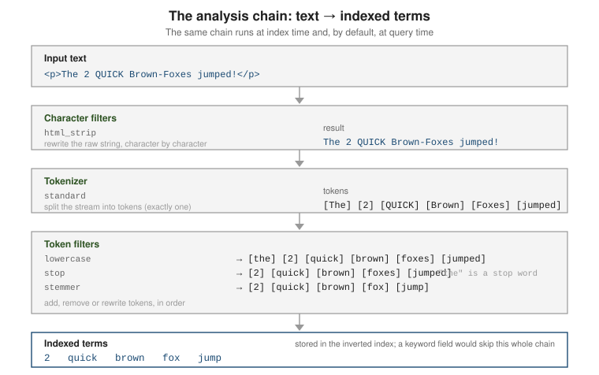

Text analysis: analyzers, tokenizers & token filters
|
This content was generated with the assistance of AI and should be verified against the official documentation before being relied on in production. |
Analysis is the process that converts a text value into the list of terms stored in the inverted
index. It runs when a text field is indexed and, by default, again on the query string of a
full-text query, so that "Running Shoes" indexed and "run shoe" searched still match. This page
covers the analysis chain, how to test it, the built-in and custom analyzers, and the tokenizers and
token filters you assemble them from.
What analysis is
An analyzer is an ordered pipeline of three parts, always applied in this order:
-
Character filters (zero or more) — rewrite the raw string before tokenization: strip HTML, transliterate, replace characters.
-
Tokenizer (exactly one) — split the character stream into tokens, usually at word boundaries, and record each token’s offsets and position.
-
Token filters (zero or more) — add, remove, or rewrite tokens: lowercase, drop stop words, apply stemming or synonyms.

Analysis applies only to the text field type. A keyword field is not analyzed: its value is
stored verbatim as a single term, which is what makes it right for exact filters, sorting, and
aggregations. Map a field as text for relevance-ranked full-text search and as keyword for exact
matching — often both at once via a multi-field. See
Mapping & field types for that split, and
Text analysis for the
overview.
// A text field is analyzed; a keyword field is not.
PUT /articles
{
"mappings": {
"properties": {
"title": { "type": "text" },
"status": { "type": "keyword" }
}
}
}This is a sharper split than a document database’s text handling: MongoDB folds analysis options into the text index itself (Text, wildcard, geospatial & Atlas search) and Couchbase attaches analyzers to a Full-Text Search index (Search, Analytics & Eventing), whereas in Elasticsearch the analyzer is a property of the field mapping and shapes every term in the main index.
Testing analysis with the _analyze API
The _analyze API runs text through an analyzer and returns the resulting tokens with their
positions and offsets — the fastest way to see what a field will actually index. See
Test an analyzer.
// Ad-hoc: a built-in analyzer, no index needed.
POST /_analyze
{
"analyzer": "standard",
"text": "The 2 QUICK Brown-Foxes jumped!"
}
// => tokens: the, 2, quick, brown, foxes, jumped
// Ad-hoc: build a chain inline from a char filter, tokenizer and filters.
POST /_analyze
{
"char_filter": [ "html_strip" ],
"tokenizer": "standard",
"filter": [ "lowercase", "snowball" ],
"text": "<p>The 2 QUICK Brown-Foxes jumped!</p>"
}
// => 2, quick, brown, fox, jump
// Against a real field, using whatever analyzer that field is mapped with.
POST /articles/_analyze
{
"field": "title",
"text": "The Quick Brown Fox"
}Add "explain": true to see each stage’s output separately, which is invaluable when a multi-filter
chain is not producing the terms you expect.
Built-in analyzers
Elasticsearch ships ready-made analyzers; standard is the default for every text field. See
Built-in analyzer reference.
| Analyzer | What it does |
|---|---|
|
Unicode-segmentation tokenizer + |
|
Splits on anything that is not a letter, then lowercases. Digits are dropped. |
|
Splits on whitespace only. No lowercasing, punctuation kept. |
|
A no-op "analyzer": emits the entire input as one token (useful as an override on a |
|
Splits on a configurable regular expression (default |
|
Like |
|
Language-specific tokenization, stop words and stemming. |
// Compare two built-ins on the same input.
POST /_analyze
{ "analyzer": "simple", "text": "XL-Size 2 items" } // => xl, size, items
POST /_analyze
{ "analyzer": "whitespace", "text": "XL-Size 2 items" } // => XL-Size, 2, items
// The english analyzer stems and removes English stop words.
POST /_analyze
{ "analyzer": "english", "text": "The runners were running quickly" }
// => runner, run, quickliA built-in analyzer can be configured (a copy with different options) under
settings.analysis.analyzer:
PUT /blog
{
"settings": {
"analysis": {
"analyzer": {
"my_english": {
"type": "standard",
"stopwords": "_english_",
"max_token_length": 20
}
}
}
}
}Custom analyzers
A custom analyzer names one tokenizer and any number of char filters and token filters. Define it
under settings.analysis and reference it from a mapping. See
Create a custom analyzer.
Analyzer, tokenizer and filter definitions are fixed at index-creation time; changing them means
creating a new index and reindexing
(Indexing, CRUD & bulk).
PUT /docs
{
"settings": {
"analysis": {
"char_filter": {
"de_umlaut": { "type": "mapping", "mappings": [ "ß => ss" ] }
},
"filter": {
"en_stop": { "type": "stop", "stopwords": "_english_" },
"en_stem": { "type": "stemmer", "language": "english" }
},
"analyzer": {
"content_index": {
"type": "custom",
"char_filter": [ "html_strip", "de_umlaut" ],
"tokenizer": "standard",
"filter": [ "lowercase", "en_stop", "en_stem" ]
}
}
}
},
"mappings": {
"properties": {
"body": { "type": "text", "analyzer": "content_index" }
}
}
}search_analyzer: when index and query analysis differ
By default the field’s analyzer runs at both index and query time. Set a separate
search_analyzer when the two should differ — the classic case is edge n-gram autocomplete:
generate prefixes at index time, but at query time analyze the user’s text normally so "eleph" is
looked up as the whole term eleph (which matches the stored prefix) instead of being itself broken
into e, el, ele, …. See
search_analyzer.
PUT /catalog
{
"settings": {
"analysis": {
"filter": {
"autocomplete": { "type": "edge_ngram", "min_gram": 2, "max_gram": 15 }
},
"analyzer": {
"autocomplete_index": { "tokenizer": "standard", "filter": [ "lowercase", "autocomplete" ] },
"autocomplete_search": { "tokenizer": "standard", "filter": [ "lowercase" ] }
}
}
},
"mappings": {
"properties": {
"name": {
"type": "text",
"analyzer": "autocomplete_index",
"search_analyzer": "autocomplete_search"
}
}
}
}
// "Elephant" indexes as: el, ele, elep, ..., elephant
// A search for "eleph" is analyzed to just: eleph -> matches the stored prefix
GET /catalog/_search
{ "query": { "match": { "name": "eleph" } } }Normalizers for keyword fields
A keyword field cannot have an analyzer, but it can have a normalizer — a restricted chain of
char filters and token filters (no tokenizer, and only filters that emit a single token, such as
lowercase and asciifolding). It gives case-insensitive or accent-insensitive exact matching,
sorting, and aggregations. See
Normalizers.
PUT /users
{
"settings": {
"analysis": {
"normalizer": {
"lc_fold": { "type": "custom", "filter": [ "lowercase", "asciifolding" ] }
}
}
},
"mappings": {
"properties": {
"city": { "type": "keyword", "normalizer": "lc_fold" }
}
}
}
// "MÜNCHEN", "München" and "munchen" all become the single term "munchen".
GET /users/_search
{ "query": { "term": { "city": "munchen" } } }Tokenizers
The tokenizer is the one mandatory stage. See Tokenizer reference.
| Tokenizer | Behaviour and typical use |
|---|---|
|
Unicode text-segmentation word boundaries; drops most punctuation. The general default. |
|
Breaks only on whitespace; keeps punctuation attached. |
|
Breaks on a regex match (default |
|
Emits the input unchanged as a single token — pair with token filters to normalize a whole string. |
|
Breaks on any character in a supplied set (e.g. |
|
Splits a path into cumulative prefixes: |
|
Emits fixed-width substrings of each term ( |
// path_hierarchy: filter documents by any ancestor folder.
POST /_analyze
{ "tokenizer": "path_hierarchy", "text": "/docs/database/elasticsearch/text-analysis" }
// => /docs, /docs/database, /docs/database/elasticsearch, /docs/database/elasticsearch/text-analysis
// https://www.elastic.co/guide/en/elasticsearch/reference/current/analysis-pathhierarchy-tokenizer.html
// char_group: split an identifier on separators without a regex engine.
POST /_analyze
{
"tokenizer": { "type": "char_group", "tokenize_on_chars": [ "-", "_", "whitespace" ] },
"text": "order-2024_v3 draft"
}
// => order, 2024, v3, draftPartial matching with edge_ngram (autocomplete)
edge_ngram turns each term into its leading substrings, so a prefix query becomes an ordinary term
lookup — the standard search-as-you-type building block. See
edge_ngram tokenizer.
POST /_analyze
{
"tokenizer": { "type": "edge_ngram", "min_gram": 2, "max_gram": 8,
"token_chars": [ "letter", "digit" ] },
"text": "Search"
}
// => se, sea, sear, searc, searchThe cost is index size: every term expands into max_gram - min_gram + 1 stored terms, and a low
min_gram over a large corpus inflates the index and slows indexing. Bound max_gram, raise
min_gram to the shortest prefix you will actually query, and always pair it with a plain
search_analyzer (above). For a managed alternative see the search_as_you_type field type in
Mapping & field types; for prefix queries
without n-grams see Term-level queries.
Token filters
Token filters run in list order; order matters (lowercase before a case-sensitive stop list,
synonym usually before stemmer). See
Token filter reference.
Common recipes:
lowercase / asciifolding — normalize case and fold accented Latin characters to ASCII (café
⇒ cafe), so queries match regardless of diacritics.
POST /_analyze
{ "tokenizer": "standard", "filter": [ "lowercase", "asciifolding" ], "text": "Crème Brûlée" }
// => creme, brulee
// https://www.elastic.co/guide/en/elasticsearch/reference/current/analysis-asciifolding-tokenfilter.htmlstop — remove high-frequency, low-signal words. Use a language list or your own. See
stop filter.
POST /_analyze
{
"tokenizer": "standard",
"filter": [ "lowercase", { "type": "stop", "stopwords": "_english_" } ],
"text": "the quick brown fox and the dog"
}
// => quick, brown, fox, dogsynonym_graph — expand or collapse equivalent terms. Prefer synonym_graph over synonym: it
handles multi-word synonyms correctly, and used as a search-time filter it can be updated by
reindex-free analyzer reload. See
synonym_graph filter.
PUT /tickets
{
"settings": {
"analysis": {
"filter": {
"my_synonyms": {
"type": "synonym_graph",
"synonyms": [ "gb, gigabyte", "ssd => solid state drive" ]
}
},
"analyzer": {
"text_search": { "tokenizer": "standard", "filter": [ "lowercase", "my_synonyms" ] }
}
}
},
"mappings": { "properties": { "body": { "type": "text", "search_analyzer": "text_search" } } }
}Stemming — reduce inflected forms to a common root so organize, organizes, organizing
match.
-
stemmer— algorithmic, per language (english,light_english,porter2, …). Fast, no dictionary, occasionally over-stems.stemmer -
stemmer_override— pin specific words to a chosen stem, applied before the algorithmic stemmer, to fix its mistakes.stemmer_override -
dictionary_decompounder— split compound words (German, Dutch, Scandinavian) into known sub-words using a supplied word list.dictionary_decompounder
PUT /docs2
{
"settings": {
"analysis": {
"filter": {
"fix_stems": { "type": "stemmer_override", "rules": [ "running => run", "news => news" ] },
"en_stem": { "type": "stemmer", "language": "english" }
},
"analyzer": {
"en": { "tokenizer": "standard", "filter": [ "lowercase", "fix_stems", "en_stem" ] }
}
}
}
}
POST /docs2/_analyze
{ "analyzer": "en", "text": "breaking news: runners running" }
// => break, news, runner, runshingle — emit token n-grams (word groups) so phrase-ish matches score without a full phrase
query; useful for "did you mean" and proximity boosts. See
shingle filter.
POST /_analyze
{
"tokenizer": "standard",
"filter": [ "lowercase", { "type": "shingle", "min_shingle_size": 2, "max_shingle_size": 2 } ],
"text": "the quick brown fox"
}
// => the, the quick, quick, quick brown, brown, brown fox, foxngram / edge_ngram as token filters — the same substring expansion as the tokenizers, but
applied after word tokenization, so word boundaries are respected first. This is the usual way to
build the autocomplete recipe: a standard tokenizer followed by lowercase and an edge_ngram
filter, rather than the edge_ngram tokenizer.
POST /_analyze
{
"tokenizer": "standard",
"filter": [ "lowercase", { "type": "edge_ngram", "min_gram": 2, "max_gram": 15 } ],
"text": "Quick Search"
}
// => qu, qui, quic, quick, se, sea, sear, searc, search
// https://www.elastic.co/guide/en/elasticsearch/reference/current/analysis-edgengram-tokenfilter.htmlFor how these analyzed terms are then queried, continue with Full-text queries and Compound queries & relevance.